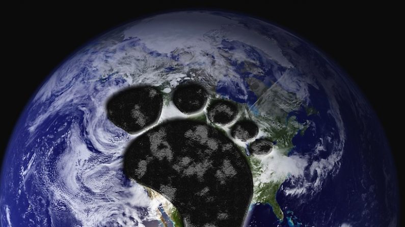

Efectos |
|  |
|
Los efectos de la contaminación de la huella ecológica no nos afectaran a nosotros, pero a las siguientes generaciones van a sentir el impacto en el ambiente y en la flora y fauna. Cuan importante se ha vuelto en estos últimos tiempos el cuidado de nuestro planeta y de todo lo que hay en él: el aire, el agua, la flora, la fauna, los bosques, y un sin número de elementos más, los cuales mantienen con vida a este hermoso lugar. ¿pero ahora veremos cuanto imapcto le generamos nosotros a nuestro planeta tierra cada día? Anualmente generamos cientos de miles de toneladas de basura, utilizamos autos contaminantes del aire, productos de origen vegetal, animal, mineral, maderable y no maderable, los cuales antes de llegar a nuestras manos, pasan por un proceso de industrialización y transformación, lo que produce un gran impacto en el planeta. |